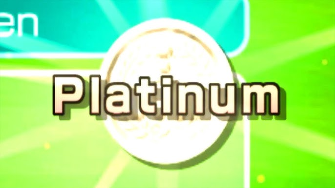

WELCOME TO THE PLATINUM WEBSITE

- What is Platinum?
- Platinum is a transition metal, with the symbol of Pt, and an atomic number 78. It is dense, malleable, ductile, and highly unreactive.
Platinumis very sought after, despite being rare, due to its many uses.
- So what is platinum used in?
- Platinum is used in many applications, such as in vehicle emmisions control devices, Jewlery, chemical prouction, petrolium refining, electrical applications, and other
minor applications
So why do I like Platinum?
Well, I just think it's a very neat metal, it's rare, shiny, and resistant to corrosion. Not to mention its name came from Spanish, one of my favorite languages.
It comes from Platina, and to another extent, Plata.
Platinum in video games.
Platinum in video games usually is a higher grade than gold, usually met after very DIFFICULT challanges.
For example, they are found in these games:
- Wii Sports, with its Platinum Medals

- Crash Bandicoot and its Platinum Relics
- and many more examples